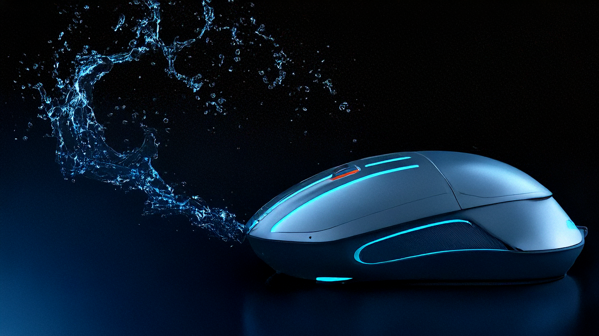
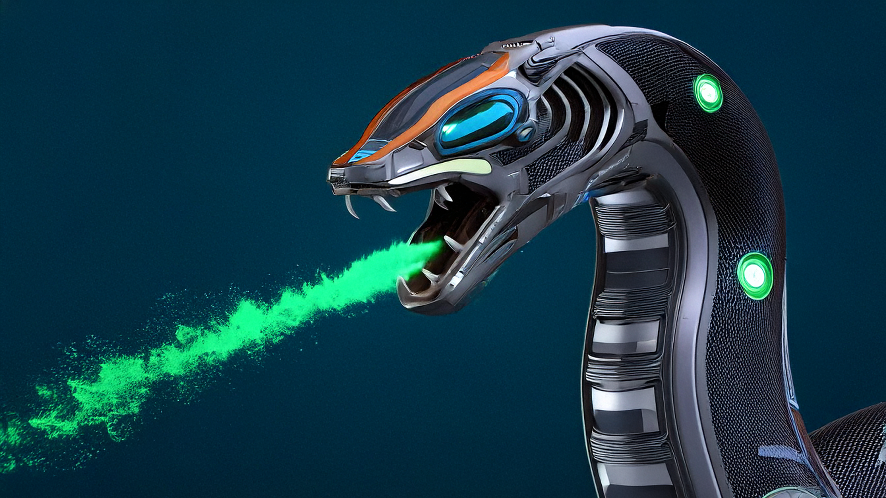

Password
Enhance your home’s security effortlessly with our cutting-edge password checker. This sophisticated device ensures that all your digital access points—from smart systems to online accounts—are safeguarded with robust, up-to-date passwords. By continuously monitoring and updating your credentials, it protects against unauthorized access and potential breaches, providing peace of mind for you and your family. With its user-friendly interface and seamless integration into your home’s technology, you’ll enjoy top-notch security with minimal hassle. Trust our advanced password checker to keep your digital world secure and worry-free.
Automatic Shudders
Transform your living environment with our state-of-the-art automatic shutters. Designed for ultimate convenience, these intelligent shutters adjust effortlessly to control natural light, privacy, and temperature, all at the touch of a button or via voice command. Whether you want to bask in the morning sun or enjoy complete darkness for restful sleep, our automatic shutters provide precise, customizable settings to suit your needs. Elevate your home’s functionality and style with these sleek, efficient shutters and experience a new level of comfort and control.
Fire Alarm
Ensure your home’s safety with our cutting-edge fire alarm system, designed for maximum protection and peace of mind. Featuring state-of-the-art sensors and real-time monitoring, these alarms provide rapid alerts at the first sign of smoke or fire, giving you and your family crucial seconds to respond. Integrated seamlessly into your home’s technology, the system offers reliable, automatic notifications and precise coverage throughout every room. Stay safe and secure with our advanced fire alarm system—your home’s first line of defense against fire hazards.
Fire Sprinklers
Protect your home with our cutting-edge fire sprinkler system, designed for swift and effective response to fire emergencies. This state-of-the-art system activates automatically at the first sign of smoke or heat, delivering precise, targeted water coverage to extinguish flames and minimize damage. With seamless integration into your home’s safety infrastructure, you can trust that every room is equipped for rapid protection. Experience unparalleled peace of mind and safeguard your property with our advanced fire sprinklers—your essential defense against fire hazards.
Water Mice

Enhance your home’s safety with our innovative water mice, specifically designed to combat fires with precision and efficiency. These cutting-edge devices autonomously deploy water to extinguish flames at the first sign of fire, providing rapid and targeted suppression to protect your property. Equipped with intelligent sensors and smart navigation, they swiftly identify and address fire hazards throughout your home. Experience peace of mind knowing that our advanced water mice are on constant guard, ensuring your home remains safe and secure against fire risks.
Fire Extenguisher Snakes

Introducing our revolutionary fire extinguisher snakes, designed to provide immediate, effective fire suppression throughout your home. These advanced devices autonomously deploy a powerful fire-retardant solution at the first sign of danger, swiftly neutralizing flames and minimizing damage. Engineered with smart sensors and flexible design, the fire extinguisher snakes seamlessly navigate and protect every corner of your home. Ensure unparalleled safety and quick response with our cutting-edge fire extinguisher snakes, offering you ultimate peace of mind and protection against fire hazards.